1핀톡은 이런 앱이에요
현장 도면(PDF·DWG) 위에 번호 핀을 찍고, 그 자리에 내용·사진을 남기는 앱이에요. 하자뿐 아니라 현장 이슈, 도면 확인 사항, 전달사항까지 위치와 함께 기록해요.
- 팀별 색 핀: 공사안전품질전기설비 팀마다 색과 번호가 따로 매겨져요.
- 핀 모양: 점 하나부터 사각형·원형·다각형 구역, 손으로 그리는 자유 선, 도면 수정 구름까지.
- 길이·면적 재기: 도면에서 바로 거리·면적·선 간격을 재요.
- 사진대지 PDF: 핀 표시 도면, 팀·업체별 현황표, 조치 전·후 사진대지를 한 번에 만들어요.
- 균열관리 엑셀: 품질팀 균열 핀으로 「콘크리트 구조물 균열관리 현황」 양식을 채워요.
- 신호가 없어도: 인터넷 없이도 핀과 사진이 휴대폰에 저장돼요.
2설치 (홈 화면에 추가)
핀톡은 앱스토어 없이 인터넷 주소로 여는 웹앱이에요. 홈 화면에 추가해 두면 아이콘을 눌러 일반 앱처럼 열려요. 체험판은 홈 화면 아이콘으로 열어 써야 기록이 저절로 지워지지 않아요(16번 참고).
체험판 주소: daegeon1208-ui.github.io/pintalk/try/
- 사파리로 위 주소를 열어요.다른 앱 안에서 링크를 눌러 열렸다면, 화면 오른쪽 아래나 ⋯ 메뉴의 Safari로 열기를 먼저 눌러 주세요.
- 화면 아래(또는 주소창 옆)의 공유 버튼 을 눌러요.공유 버튼이 안 보이면 주소창 옆 ⋯ 를 누른 뒤 공유를 눌러요.
- 올라온 목록을 위로 밀어 홈 화면에 추가 를 눌러요.목록에 없으면 맨 아래 더 보기나 작업 편집에서 찾을 수 있어요.
- 이름이 핀톡 체험인지 보고 오른쪽 위 추가를 눌러요.웹 앱으로 열기 스위치가 보이면 켜 둔 채로 추가하세요.
- 홈 화면에 생긴 핀톡 아이콘을 눌러 열어요. 다음부터는 이 아이콘으로 열면 돼요.
- 크롬으로 위 주소를 열어요.다른 앱 안에서 열렸다면 오른쪽 위 ⋮ 메뉴의 다른 브라우저로 열기나 Chrome으로 열기를 먼저 눌러 주세요.
- 화면 아래에 앱 설치 안내가 뜨면 바로 설치를 눌러도 돼요. 안 뜨면 다음 단계로.
- 오른쪽 위 점 세 개 버튼 를 눌러요.
- 홈 화면에 추가를 누르고, 이어서 설치(또는 추가)를 눌러요.메뉴에 앱 설치로 나오기도 해요. 같은 기능이에요.
- 홈 화면(또는 앱 목록)에 생긴 핀톡 아이콘을 눌러 열어요.
3처음 열기
체험판은 로그인 없이 바로 열려요. 처음 열면 따라하기를 할지 물어봐요.
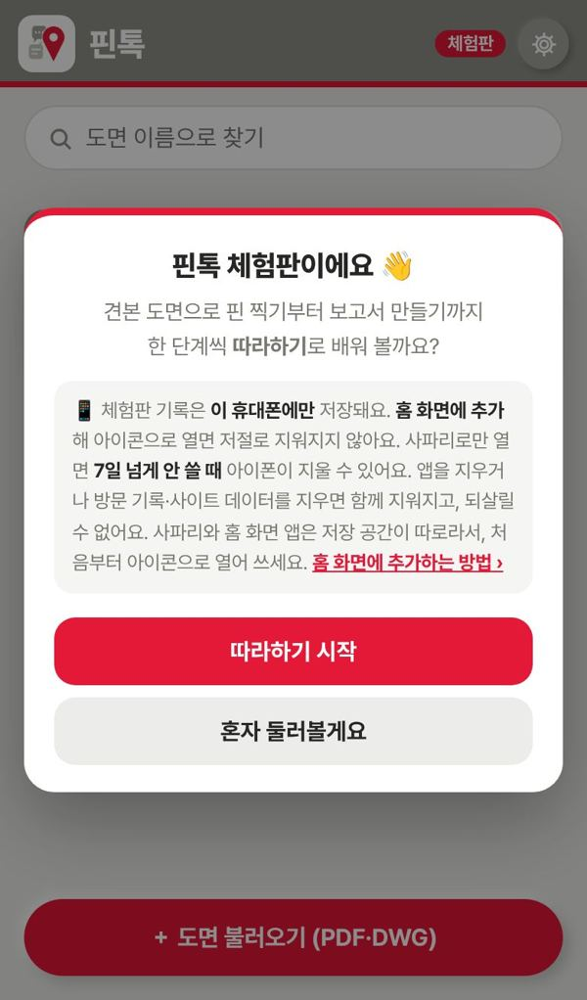
- 따라하기 시작: 견본 도면으로 핀 찍기부터 내보내기까지 단계별로 직접 눌러 보며 배워요(15번).
- 혼자 둘러볼게요: 바로 도면 목록으로 가요. 따라하기는 설정에서 언제든 다시 시작할 수 있어요.
4도면 목록
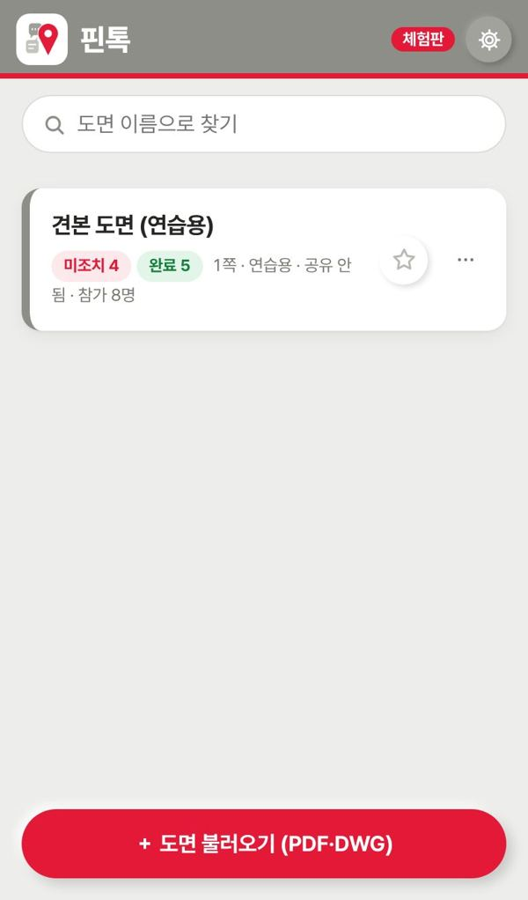
- 견본 도면 (연습용)이 미리 들어 있어요. 팀별 예시 핀 12개(조치 전·후 사진 포함)가 찍혀 있어서 바로 둘러볼 수 있어요.
- 검색: 도면 이름 일부만 넣어도 찾아요. 카드에는 미조치·완료 핀 수, 쪽 수가 보이고, ☆를 누르면 맨 위에 고정돼요.
- ⋯: 도면 설정을 열어요(5번).
- ⚙ 설정(14번).
- ＋ 도면 불러오기: 메일·파일 앱에 받은 PDF나 캐드 DWG를 골라요. DWG는 휴대폰 안에서 PDF로 바꿔 넣어요.
5도면 설정과 쪽 편집
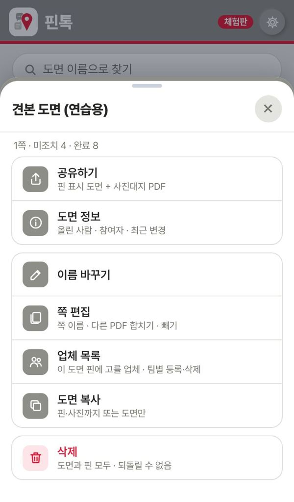
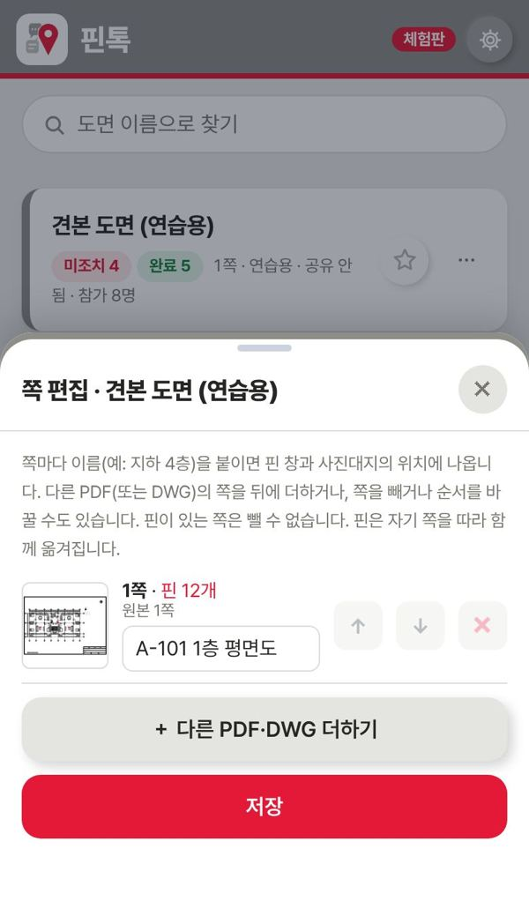
- 공유하기: 핀 표시 도면과 사진대지를 PDF로 만들어 보내요.
- 도면 정보: 팀별 핀 수, 최근 바뀐 핀.
- 이름 바꾸기 · 쪽 편집 · 도면 복사(핀·사진까지 또는 도면만).
- 업체 목록: 이 도면의 핀에 고를 업체를 팀별로 등록·삭제해요.
- 삭제: 도면과 핀이 모두 지워지고 되돌릴 수 없어요.
쪽 편집
- 작은 도면을 누르면 크게 볼 수 있어요.
- 쪽 이름(예: 지하 4층)을 붙이면 도면 화면과 사진대지에 이 이름이 나와요. PDF에 쪽 이름이 들어 있으면 저절로 채워져요.
- 다른 PDF·DWG 더하기로 쪽을 합치고, ↑ ↓ 로 순서를, ✕ 로 쪽을 빼요. 핀이 있는 쪽은 뺄 수 없어요.
6도면 화면과 거르기
도면을 누르면 열려요. 두 손가락으로 벌리면 확대, 한 손가락으로 끌면 이동이에요. 핀을 한 번 누르면 작은 미리보기 카드가 뜨고, 카드를 누르면 핀 창이 열려요.
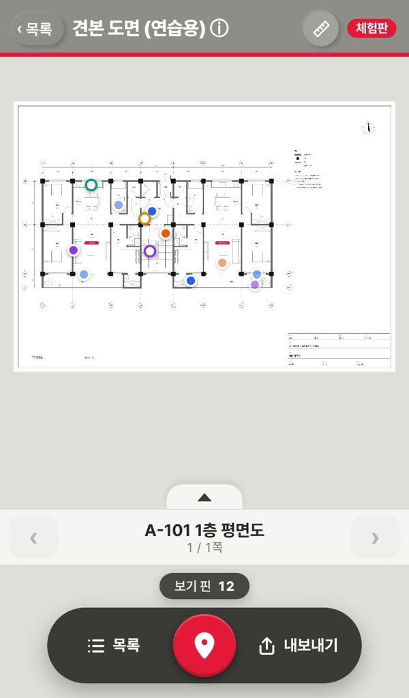
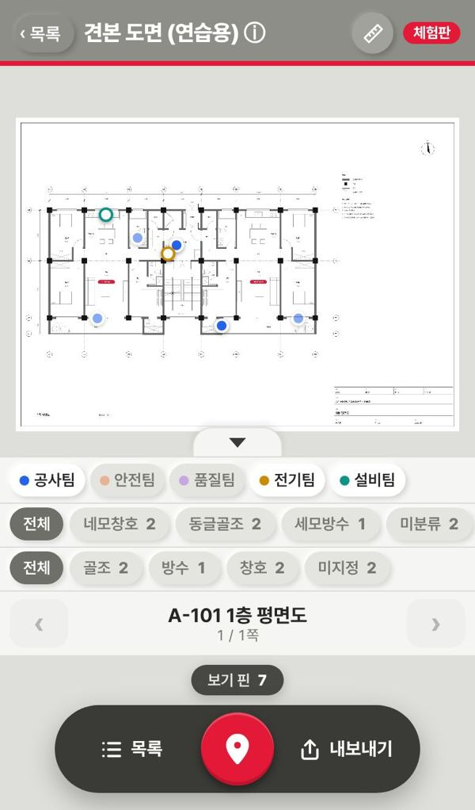
- 도면 이름(ⓘ): 누르면 도면 정보가 나와요. 오른쪽 자 모양 버튼은 길이·면적 재기(8번)예요.
- ▲ 탭: 누르거나 위로 밀면 팀 · 업체 · 공종 거르기 줄이 펼쳐져요. 팀 버튼을 누를 때마다 그 팀 핀이 보였다 숨었다 하고, 업체·공종 줄에서 전체를 누르면 거르기가 풀려요.
- ‹ 쪽 이름 ›: 쪽이 여러 개인 도면을 넘겨요. 아래 작은 칸에 지금 보이는 보기 핀 수가 나와요.
- 목록(11번) · 핀 버튼(7번) · 내보내기(12번).
7핀 찍기 (점·도형·자유·구름)
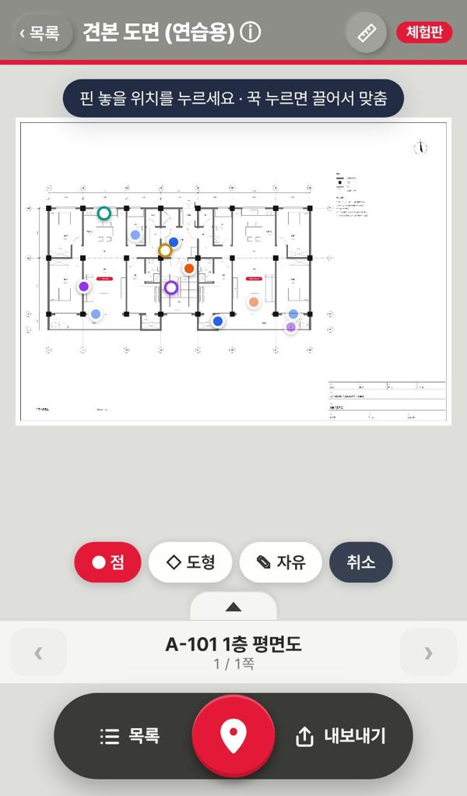
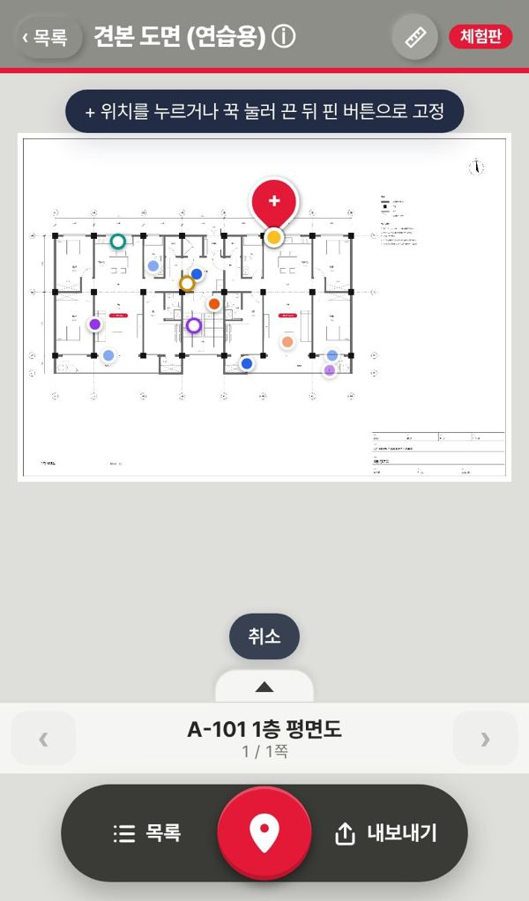
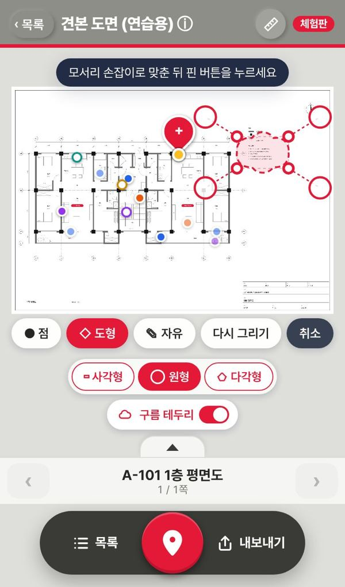
- 가운데 빨간 핀 버튼을 누르면 핀 찍기가 시작되고, 아래에 ● 점 · ◇ 도형 · ✎ 자유가 나와요. 보통은 점이면 돼요.
- 도면에서 위치를 한 번 누르면 빨간 ＋ 임시 핀이 놓여요. 다른 곳을 누르면 옮겨지고, 꾹 누르면 끌어서 맞출 수 있어요.
- 핀 버튼을 한 번 더 누르면 고정되고 핀 창이 열려요. 그만두려면 취소.
구역으로 찍기
- 도형을 고르면 아래 줄에서 사각형 · 원형 · 다각형을 골라요. 사각형·원형은 끌어서 그리고, 모서리 손잡이로 크기를 맞춰요. 다각형은 꼭짓점을 차례로 누르고 핀 버튼으로 고정해요.
- 자유는 한 손가락으로 그려요(두 손가락은 확대·이동). 여러 번 나눠 그려도 되고 되돌리기가 있어요.
- 구름 테두리 스위치를 켜면 도형이 도면 수정 구름처럼 그려져요. 자유 그리기는 한 바퀴 돌려 처음 자리 근처에서 닫으면 구름이 되고, 닫지 않은 선은 그냥 선으로 남아요. 스위치는 다음에도 켜진 채로 기억돼요.
8길이·면적 재기
도면 화면 위쪽 자 모양 버튼을 누르면 보던 도면·쪽이 측정 화면으로 열려요. 재는 동안 도면과 핀은 바뀌지 않아요.
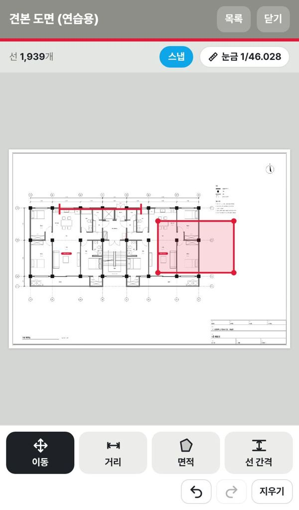
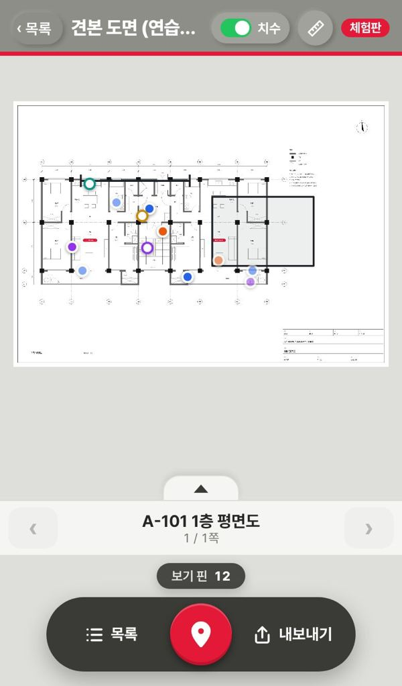
- 처음 한 번 위쪽 눈금 칩을 눌러 눈금을 맞춰요. 치수선 양 끝처럼 길이를 아는 두 점을 찍고 실제 치수(mm)를 넣는 게 가장 정확해요. 축척(1/50 등)으로 맞출 수도 있고, 소수점 셋째 자리까지 넣을 수 있어요.
- 아래 도구에서 고르세요. 거리는 두 점을 차례로, 선 간격은 첫 선을 찍은 뒤 다음 선을 찍으면 수직 간격이, 면적은 모서리를 차례로 찍고 첫 점을 다시 찍거나 빨간 ✓를 누르면 m²와 둘레가 나와요.
- 잰 값(빨간 글자)을 누르면 점 옮기기 · 삭제 · 메모를 할 수 있어요. 거리는 길이 숫자를 넣어 바로 바꿀 수 있고(A점·B점·가운데 중 어디를 고정할지 고름), 점을 옮길 때는 원래 선 방향으로 점선 스냅이 잡혀요. 첫 점은 A, 나중 점은 B로 표시돼요. 면적은 깊이(mm)를 넣으면 부피(m³)도 나와요.
- 캐드에서 뽑은 PDF는 선 끝·교차점·선 위에 스냅이 붙어요(위쪽 스냅 칩으로 켜고 끔). 찍을 때는 손가락 위 십자선과 돋보기를 보고 맞추세요. ↶ ↷ 로 되돌리기·다시 하기, 다 쓰면 닫기.
9핀 내용과 사진
핀 창은 위에 도면, 아래에 내용이 보여요. 손잡이를 올리면 크게, 내리면 닫혀요. 적는 즉시 저장되고, 창 위 ‹ › 로 다음 핀으로 넘어가요.
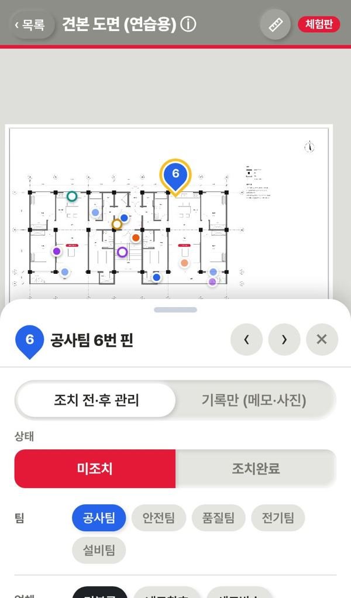
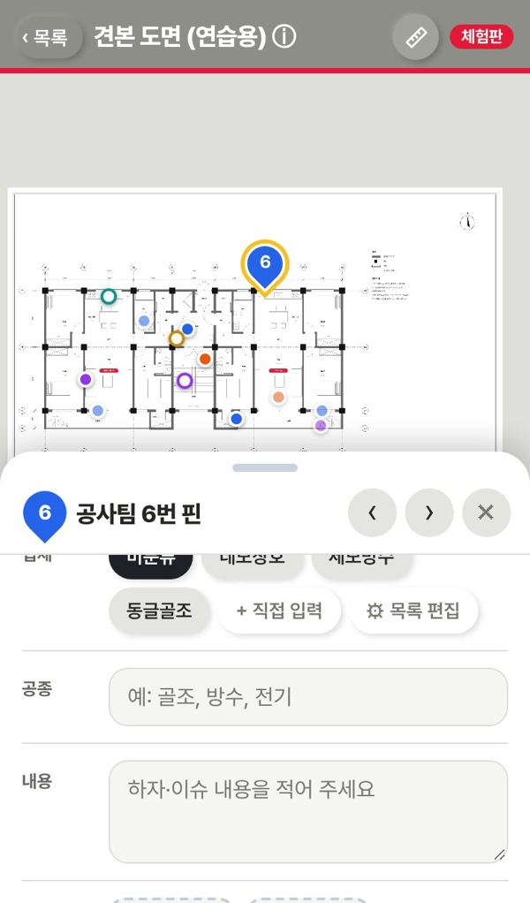
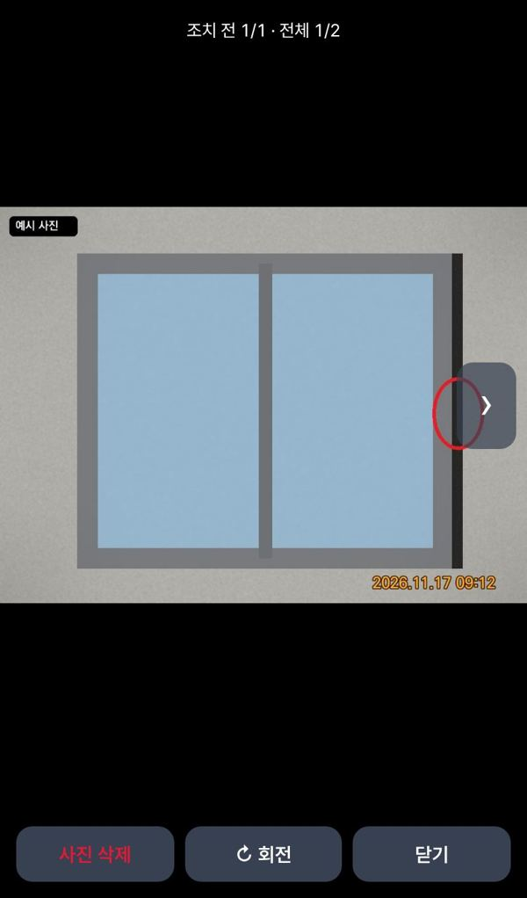
- 조치 전·후 관리 / 기록만(메모·사진): 조치가 필요 없는 확인 내용·전달사항은 기록만으로 남겨요.
- 상태: 처음엔 미조치예요. 조치가 끝나면 조치완료(10번).
- 팀: 담당 팀을 고르면 핀 색과 번호가 그 팀 것으로 바뀌어요. 품질팀은 업체·공종 대신 종류(균열·재료분리)를 골라요(13번).
- 업체 · 공종: 목록에서 고르거나 직접 입력. 업체 목록은 ⚙ 목록 편집에서 고쳐요. 체험판에는 예시 업체(네모창호·세모방수·동글골조)가 들어 있어요.
- 내용과 사진: 촬영 또는 앨범으로 여러 장 넣어요. 컴퓨터에서는 끌어다 놓거나 붙여넣기 해도 돼요.
사진 크게 보기: 두 손가락으로 벌리거나 두 번 누르면 확대, 옆으로 밀면 다음 사진이에요. ↻ 회전, ☆ 대표 사진(사진대지에 들어갈 사진), 사진 삭제가 있어요.
10조치완료
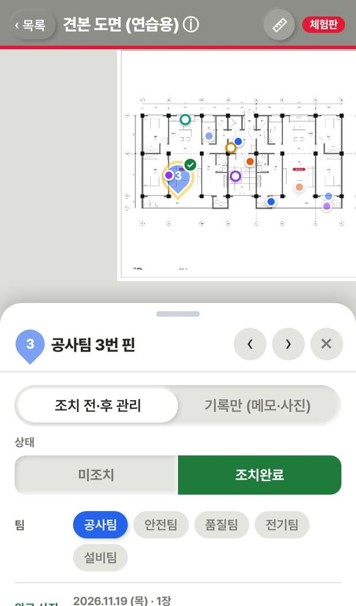
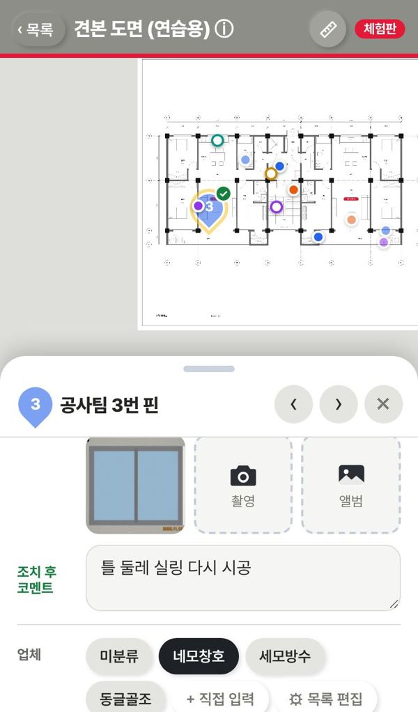
- 조치완료를 누르면 시각이 기록되고 핀이 ✓ 로 바뀌어요.
- 조치 후 사진과 조치 후 코멘트 칸이 생겨요. 조치 후 사진을 넣으면 사진대지에 조치 전·후가 나란히 들어가요.
11핀 목록
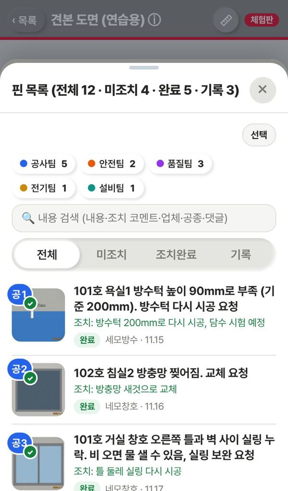
- 팀으로 거르고(여러 팀 가능), 내용 검색으로 내용·업체·공종을 찾아요.
- 전체 · 미조치 · 조치완료 · 기록으로 나눠 봐요.
- 사진, 내용, 조치 코멘트, 업체, 날짜가 보여요. 누르면 도면에서 그 핀으로 이동해요.
- 선택: 여러 핀을 골라 날짜·팀·업체·공종을 한꺼번에 바꾸거나, 고른 핀만 사진대지로 만들거나, 지울 수 있어요. 쪽이 여러 개인 도면은 ⇄ 다른 쪽으로 옮기기도 있어요.
12내보내기 (사진대지 PDF)
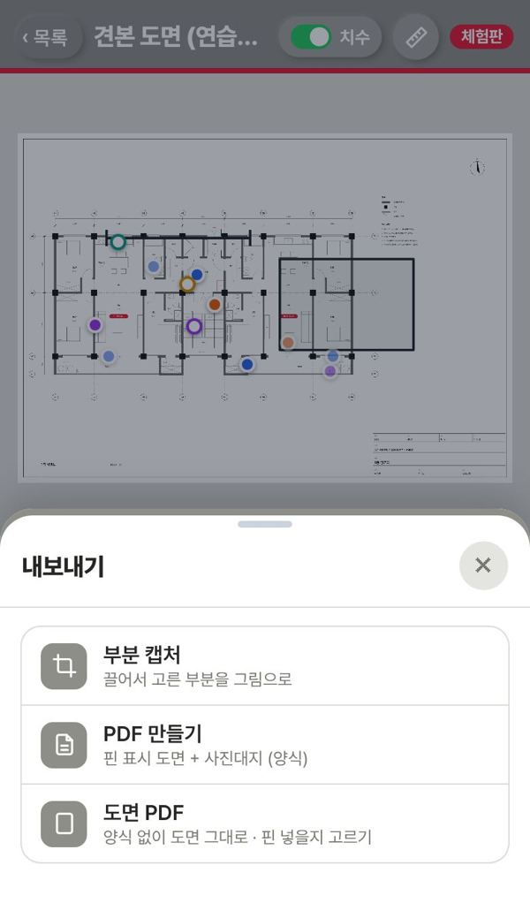
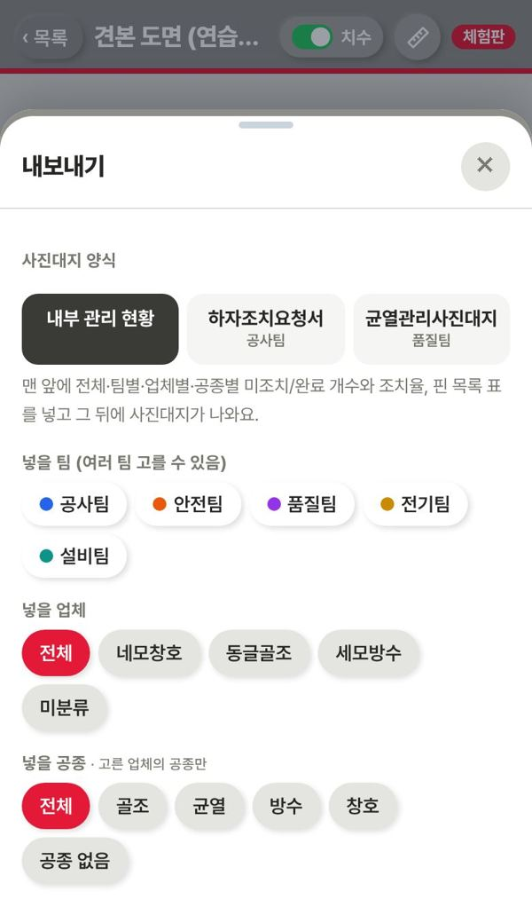
- 부분 캡처: 끌어서 고른 부분을 그림으로 만들어요(펜으로 표시 가능). PDF 만들기: 핀 표시 도면 + 사진대지. 도면 PDF: 핀 없이 도면만.
- 사진대지 양식: 내부 관리 현황(현황표와 핀 목록), 하자조치요청서(공사팀, 업체별로 묶음), 균열관리사진대지(품질팀).
- 넣을 팀 · 업체 · 공종, 기간, 넣을 핀(전체·미조치만·조치완료만)을 고르고 미리보기로 확인한 뒤 PDF 만들기 → 보내기로 메일·메신저 등에 보내거나 파일에 저장해요.
만들어지는 PDF는 이렇게 생겼어요(내부 관리 현황).
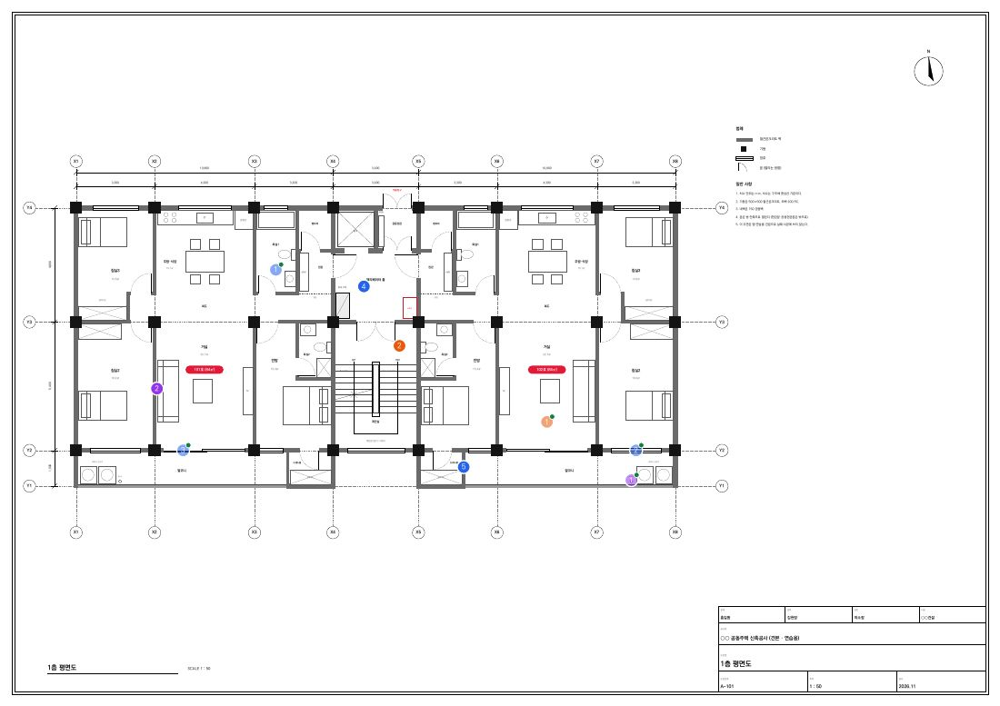
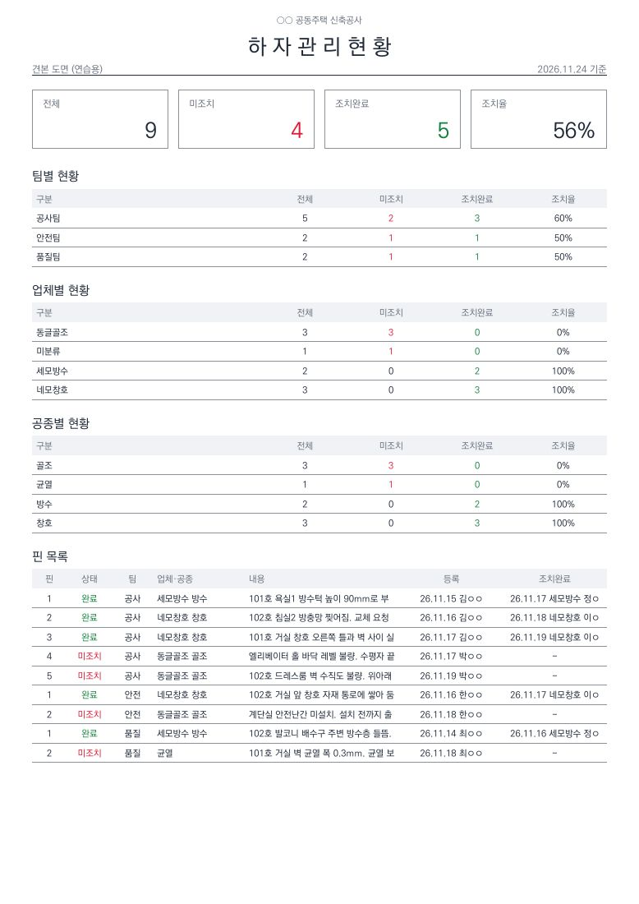
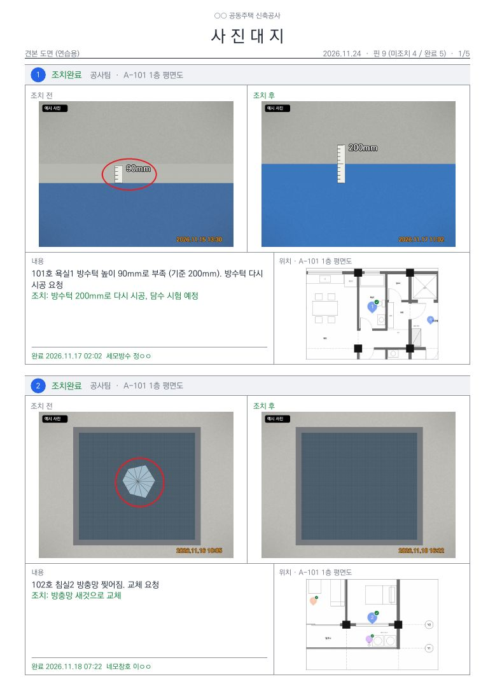
13균열 관리 (엑셀)
품질팀이 콘크리트 균열을 핀으로 찍어 두면, 「콘크리트 구조물 균열관리 현황」 엑셀 양식을 채운 파일이 한 번에 나와요.
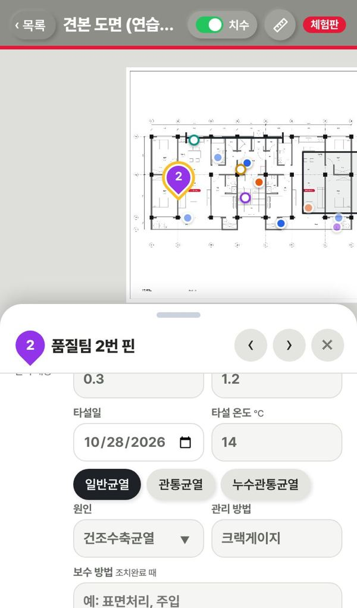
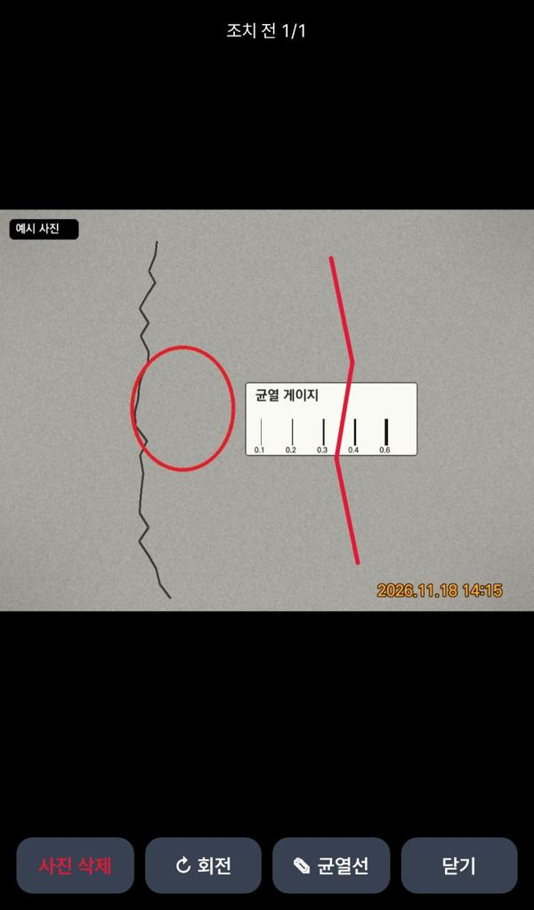
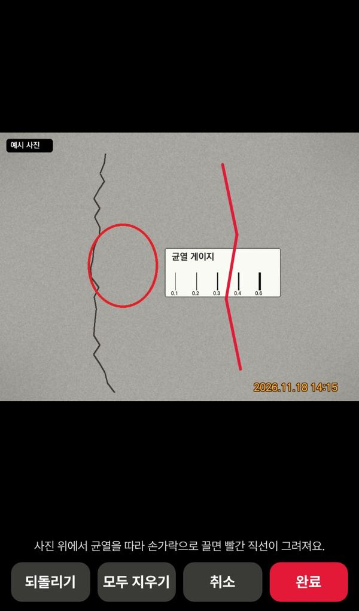
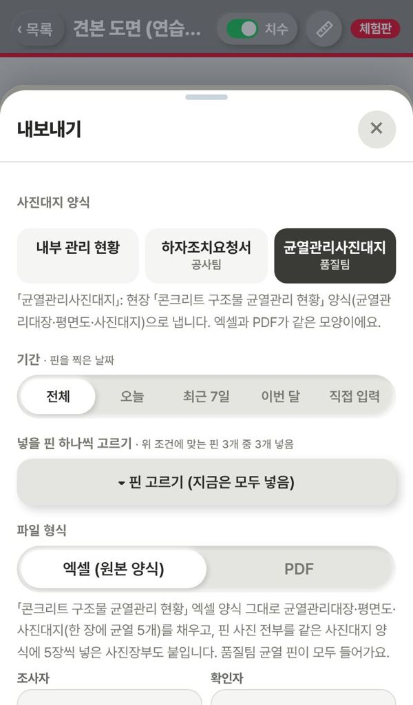
- 핀 창에서 팀을 품질팀, 종류를 균열로 고르면 균열 칸이 생겨요. 균열폭(mm)·길이(m)·타설일·타설 온도를 넣고 일반균열 · 관통균열 · 누수관통균열 중 하나를 골라요. 원인·관리 방법·보수 방법도 적어요.
- 사진을 크게 열고 ✎ 균열선을 눌러요.
- 사진 위에서 균열을 따라 끌면 빨간 선이 그려져요. 되돌리기 · 모두 지우기가 있고 완료를 누르면 저장돼요.
- 내보내기 → PDF 만들기 → 균열관리사진대지를 고르고 파일 형식을 엑셀 (원본 양식)으로 둬요. 조사자 · 확인자 이름을 넣고 엑셀 만들기. 파일 형식을 PDF로 바꾸면 같은 양식이 PDF로 나와요.
엑셀에는 균열관리대장 · 평면도 · 사진대지 · 사진장부 시트가 들어가요. 범례는 모두 빨간색으로, 일반균열은 한 줄, 관통균열은 두 줄, 누수관통균열은 두 줄에 빗금이에요.
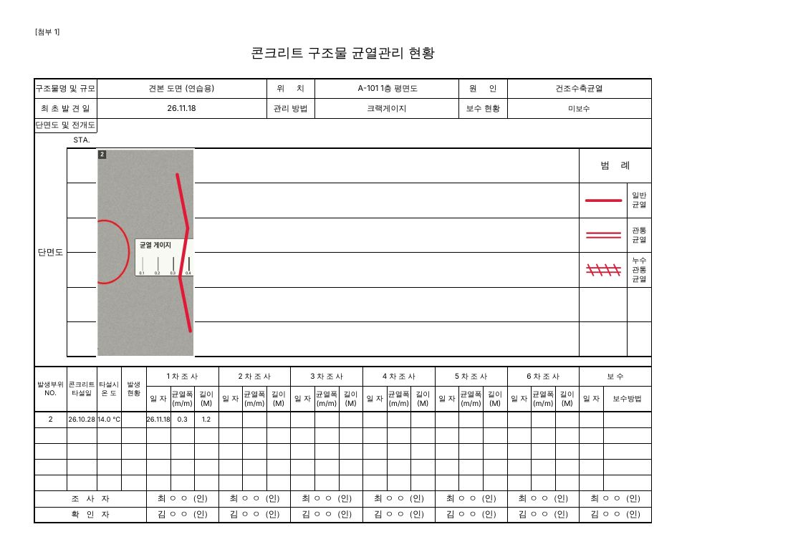
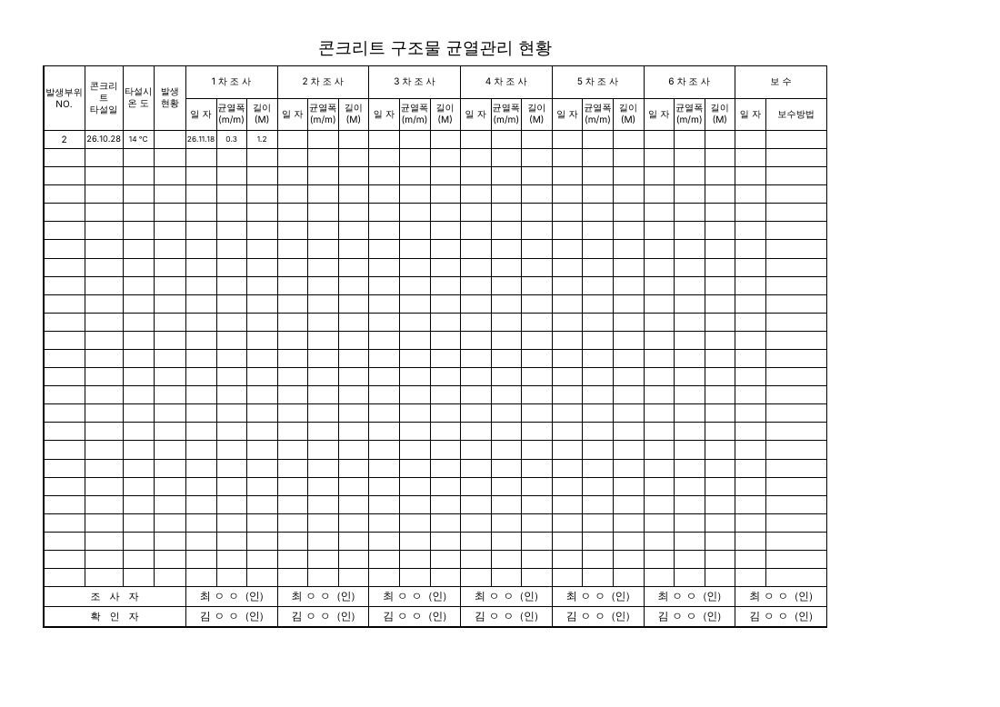
14설정
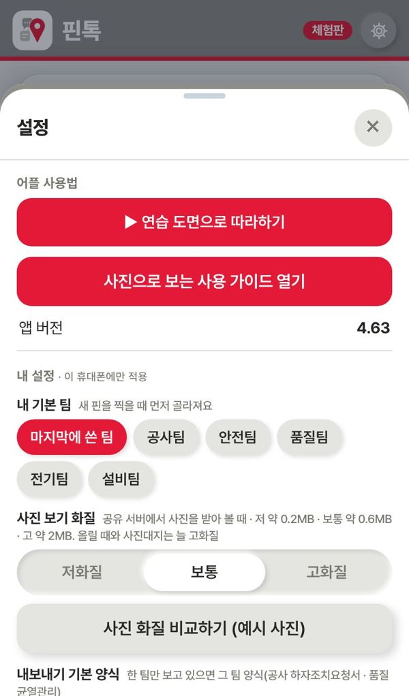
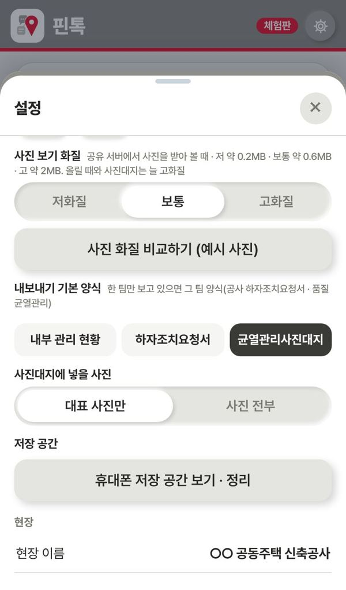
- 어플 사용법: 연습 도면으로 따라하기, 이 가이드 열기, 앱 버전.
- 내 기본 팀: 새 핀을 찍을 때 먼저 골라지는 팀(마지막에 쓴 팀으로도 둘 수 있어요).
- 사진 화질: 저화질 약 0.2MB · 보통 약 0.6MB · 고화질 약 2MB. 사진 화질 비교하기로 예시 사진을 견줘 볼 수 있어요.
- 내보내기 기본 양식, 사진대지에 넣을 사진(대표 사진만 / 사진 전부), 휴대폰 저장 공간 보기·정리.
15따라하기로 연습
견본 도면(공동주택 1층 평면도 A-101)을 열고, 테두리가 가리키는 버튼을 직접 눌러 가며 배워요. 핀 찍기부터 목록·내보내기·도면 관리·설정까지 다뤄요.
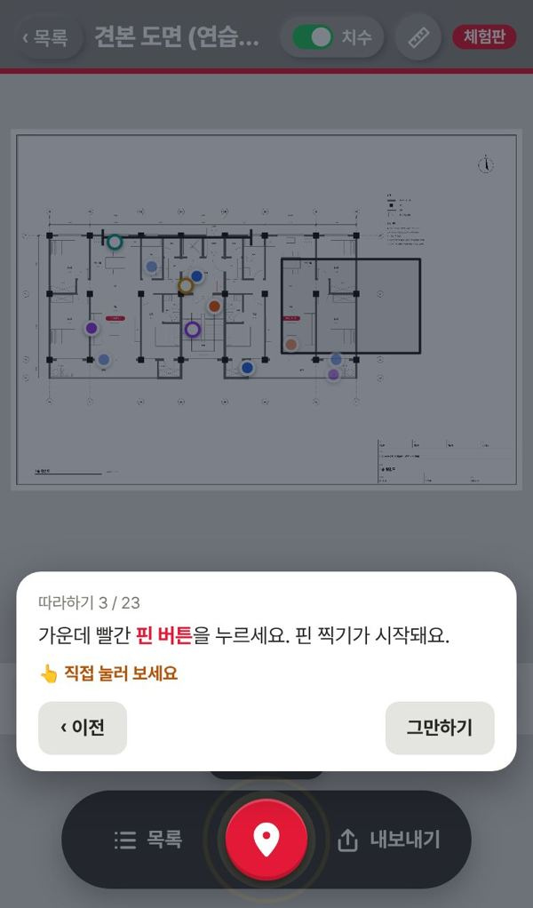
설정 → ▶ 연습 도면으로 따라하기로 언제든 다시 시작해요. 중간에 ‹ 이전으로 돌아가거나 그만하기로 끝낼 수 있어요.
16자주 묻는 질문
- 체험판 기록은 어디에 저장되나요? 지워지기도 하나요?
- 도면·핀·사진은 이 휴대폰에만 저장돼요. 앱을 지우거나 방문 기록·사이트 데이터를 지우면 함께 지워지고 되살릴 수 없어요. 아이폰은 사파리로만 열면 7일 넘게 안 쓸 때 지워질 수 있으니 홈 화면 아이콘으로 열어 쓰세요(2번).
- 다른 사람과 같이 볼 수 있나요?
- 체험판은 다른 사람과 공유되지 않고 개인 도면으로만 써요. 결과를 전하고 싶으면 내보내기로 PDF·엑셀을 만들어 보내세요.
- 신호가 안 터지는 곳에서도 되나요?
- 네. 한 번 열어 둔 체험판은 인터넷이 끊겨도 열리고, 핀과 사진도 휴대폰에 바로 저장돼요.
- 핀 번호가 바뀌었어요.
- 핀 번호는 도면·팀마다 찍은 날짜 순서로 매겨져요. 앞쪽 핀을 지우거나 찍은 날짜를 고치면 뒤 번호가 당겨지거나 바뀌어요.
- 사진을 넣다가 도면 목록으로 돌아갔어요.
- 핀이 아주 많은 큰 도면에서는 휴대폰 메모리가 모자라 핀톡이 다시 시작될 수 있어요. 10분 안이면 보던 도면과 핀이 다시 열리니 사진만 한 번 더 넣어 주세요. 자주 그러면 설정 → 사진 화질을 ‘저화질’로 바꿔 보세요.
- 잰 길이가 도면 치수와 조금 달라요.
- 눈금을 맞출 때 찍은 두 점이 조금만 어긋나도 차이가 생겨요. 되도록 긴 치수선의 양 끝을 확대해서 찍고, 캐드 PDF라면 스냅을 켜 두세요.
- DWG 도면 선이 얇아요.
- DWG는 휴대폰 안에서 PDF로 바꿀 때 모든 선을 얇게 그려요. 선 굵기가 중요하면 캐드에서 PDF로 뽑아 불러오세요.